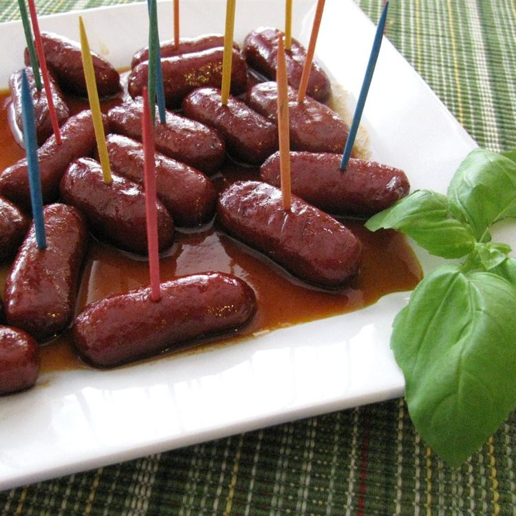

Cocktail Wieners

Description
Cocktail wieners are super easy to make in a slow cooker with only three ingredients for a crowd-pleasing treat!
Ingredients
These cocktail weenies only need three ingredients!
- Cocktail sausages (such as Lit'l Smokies): 2 packages (16 ounce)
- Barbeque sauce: 1 cup
- Grape jelly: ¾ cup
Steps
And it only takes three steps to make!
- Mix barbeque sauce and grape jelly in a slow cooker;
- Add cocktail sausages and stir until well coated;
- Cover and cook on Low for 2 to 3 hours.